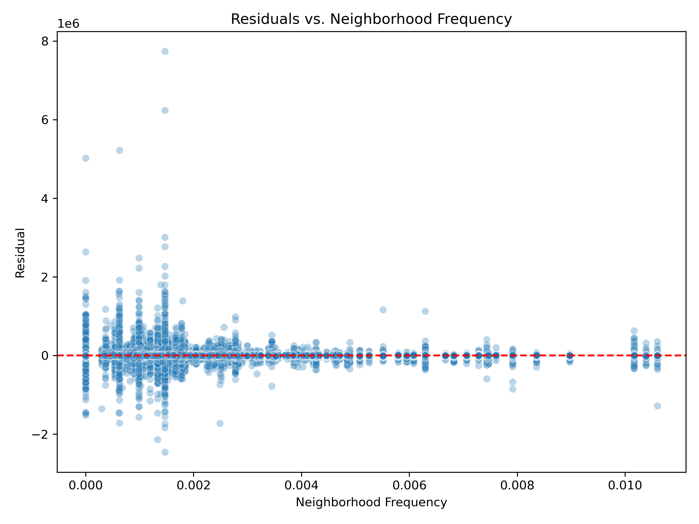
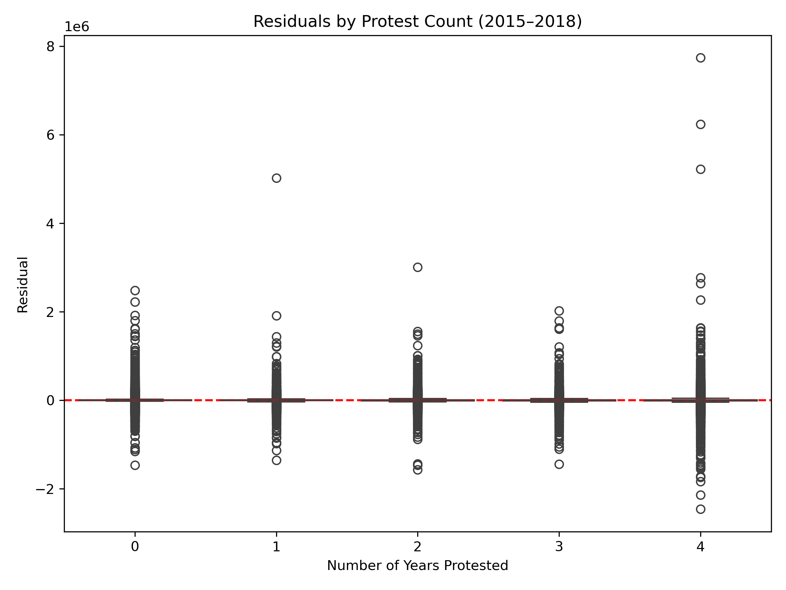
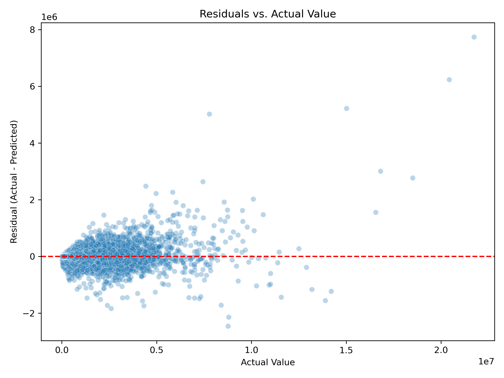
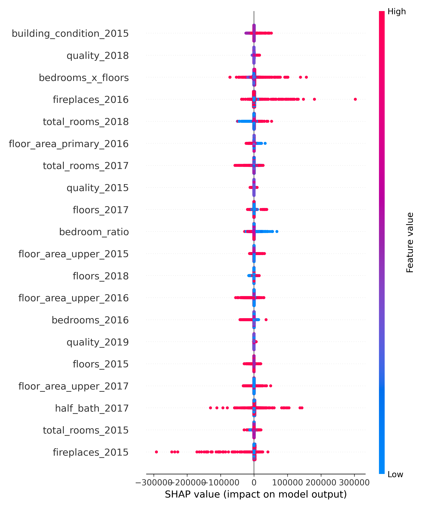
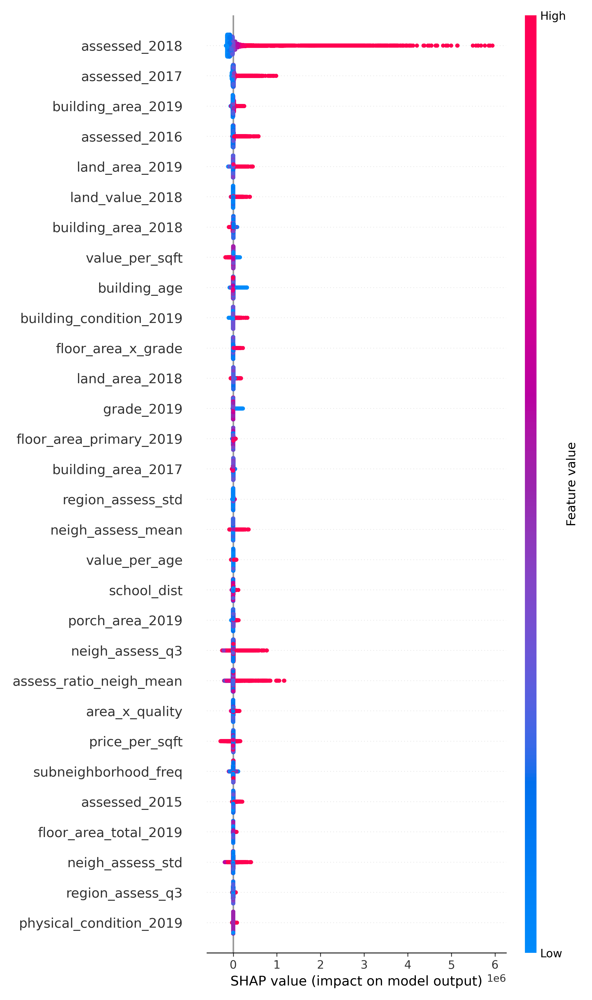

echo: true
output: false
collapse: true
def backfill_categorical_year_features(df, features, years):
for feature in features:
year_cols = [f"{feature}_{y}" for y in years if f"{feature}_{y}" in df.columns]
if len(year_cols) >= 2:
df[year_cols] = df[year_cols].bfill(axis=1)
print(f" Backfilled: {feature} across {year_cols}")
else:
print(f" Skipped: {feature} — not enough year-based columns.")
return df
# Backfill from most recent year to oldest
years = ['2019', '2018', '2017', '2016', '2015']
features = ['building_condition', 'foundation_type', 'grade', 'has_cooling',
'has_heat', 'physical_condition', 'exterior_walls']
# Apply to train and test
train_merged = backfill_categorical_year_features(train_merged, features, years)
test_merged = backfill_categorical_year_features(test_merged, features, years)STA 9890 Project: Property Valuation
1. Background on Property Valuation and Machine Learning
1.1 Why Prediction Accuracy and Interpretability Matter
Property assessment values directly influence individual tax obligations, urban development decisions, and housing affordability analyses. However, public datasets are often noisy and incomplete—featuring missing renovation records, outdated area measurements, or abrupt shifts in land valuation. Therefore, a high-performing ML model must not only minimize prediction error but also provide interpretable insights that help stakeholders understand, trust, and audit the predictions—especially when such predictions may inform public policy or fiscal planning.
2. Data Description and Objective
The task is to predict 2019 assessed property values using historical records from 2015 to 2019. Each record includes detailed building features, land area and value, protested assessments, and neighborhood-level identifiers.
The final 2019 target is defined as:
TARGET = building value 2019 + land value 2019
This is a regression problem with approximately 600,000 training records and 400,000 test records. No external data was permitted.
3. Feature Engineering
Feature engineering plays a critical role in unlocking predictive signals from raw data, particularly in structured datasets involving temporal and categorical variables. Our goal was to construct meaningful, leakage-free features that improve model performance while maintaining generalization to unseen data. Before initiating any feature transformations, we performed a strict comparison of columns between the training and test datasets to ensure no information advantage was present. This safeguards against data leakage and ensures that engineered features reflect patterns learnable at inference time.
3.1 Logic-Driven Missing Value Handling and Imputation
Backfilling Year-Based Columns Across Feature Groups: To handle missing values in temporally structured features (e.g., building area, quality, full bath), we designed a consistent backfilling approach that uses older data to impute more recent years. Specifically, columns were ordered from newest to oldest (i.e., 2019, 2018, …, 2015), and we applied bfill(axis=1) across these columns. This setup causes older values (e.g., from 2015 or 2016) to be used to fill in newer year columns (e.g., 2018 or 2019), effectively implementing a forward fill in temporal logic. This approach assumes that older data reflects the property’s original state more accurately and helps prevent later-year anomalies or missing values from distorting long-term trends.
This logic was applied across multiple feature groups: - Residential count features: floors, full bath, half bath, bedrooms, total rooms - Area-based features: building area, land area - Valuation features: building value, land value, assessed - Categorical building attributes: foundation type, grade, building condition, quality, quality description, physical condition, exterior walls, has cooling, has heat
Zero-Aware Property Filtering: In cases where floor_area_total_2019 = 0, we treated the property as non-residential or commercial and applied domain-specific logic to avoid inappropriate imputations or distortions in the modeling process: - All related residential building features—such as full bath, total rooms, garage area, and porch area—were set to zero. - We also zeroed out all building area variables and the corresponding building value variables to reflect the absence of a residential structure.
These records were retained in the dataset rather than dropped, as they likely represent a distinct class of properties where valuation is driven primarily by land characteristics. Explicitly identifying and treating these properties allowed the model to better separate residential and non-residential valuation patterns.
echo: true
output: false
collapse: true
# === STEP 0: Define base feature names ===
numeric_bases = [
'garage_area', 'porch_area', 'floors', 'half_bath', 'full_bath',
'total_rooms', 'bedrooms', 'fireplaces', 'building_area', 'building_value'
]
categorical_fill_map = {
'quality': 'None',
'quality_description': 'None',
'building_condition': 'None',
'foundation_type': 'None',
'grade': 'None',
'has_cooling': False,
'has_heat': False,
'physical_condition': 'None',
'exterior_walls': 'None',
'protested': False
}
# Generate full list of columns (2015–2019 only, no final columns)
numeric_cols_to_zero = [
f'{base}_{year}' for base in numeric_bases for year in range(2015, 2020)
] + ['building_value_growth']
categorical_cols_to_fill = {
f'{base}_{year}': val
for base, val in categorical_fill_map.items()
for year in range(2015, 2020)
}
# === STEP 1: Apply imputation if floor_area_total_2019 == 0 ===
for df_name, df in [('train_merged', train_merged), ('test_merged', test_merged)]:
if 'floor_area_total_2019' in df.columns:
zero_floor_mask = df['floor_area_total_2019'] == 0
# Fill numeric columns with 0
for col in numeric_cols_to_zero:
if col in df.columns:
df.loc[zero_floor_mask, col] = df.loc[zero_floor_mask, col].fillna(0)
# Fill categorical/boolean columns
for col, fill_val in categorical_cols_to_fill.items():
if col in df.columns:
df.loc[zero_floor_mask, col] = df.loc[zero_floor_mask, col].fillna(fill_val)
print(f" Filled structure-dependent missing values in {df_name} for {zero_floor_mask.sum()} rows")
else:
print(f" 'floor_area_total_2019' not found in {df_name}")Feature Drop Based on Sparse Signals: For features that appeared largely irrelevant or unused across the dataset, we calculated the percentage of zero values in columns such as mobile home area, deck area, and porch area. If a column contained over 90% zeros, it was considered non-informative and dropped from the modeling pipeline to reduce dimensionality and noise.
echo: true
output: false
collapse: true
cols_to_drop = [col for col in train_merged.columns if col.startswith("mobile_home_area")]
# Drop from both sets
train_merged.drop(columns=cols_to_drop, inplace=True)
test_merged.drop(columns=cols_to_drop, inplace=True)
print(f" Dropped columns from train/test: {cols_to_drop}")Multi-Level Median and Mode Imputation: After applying logic-based pruning, we used a three-level median imputation strategy for continuous features (e.g., assessed value 2017, building area 2017) based on the following hierarchy: - Level 1: neighborhood-level median - Level 2: region-level median - Level 3: global median (fallback)
echo: true
output: false
collapse: true
# List of all assessed columns to impute
assessed_cols = ['assessed_2015', 'assessed_2016', 'assessed_2017', 'assessed_2018']
for col in assessed_cols:
if col not in train_merged.columns:
continue
# Step 1: Compute medians from training data only
neigh_medians = train_merged.groupby('neighborhood')[col].median()
region_medians = train_merged.groupby('region')[col].median()
global_median = train_merged[col].median()
# Step 2: Train set imputation
train_merged[col] = train_merged.apply(
lambda row: neigh_medians[row['neighborhood']]
if pd.isna(row[col]) and row['neighborhood'] in neigh_medians else
region_medians[row['region']]
if pd.isna(row[col]) and row['region'] in region_medians else
global_median
if pd.isna(row[col]) else
row[col],
axis=1
)
# Step 3: Test set imputation (using train medians only)
test_merged[col] = test_merged.apply(
lambda row: neigh_medians.get(row['neighborhood'], np.nan)
if pd.isna(row[col]) else row[col],
axis=1
)
test_merged[col] = test_merged.apply(
lambda row: region_medians.get(row['region'], np.nan)
if pd.isna(row[col]) else row[col],
axis=1
)
test_merged[col].fillna(global_median, inplace=True)
print(f" Imputed '{col}' using neighborhood → region → global medians (from training data)")For categorical variables such as foundation type or building condition, we applied single-level mode imputation using the most frequent category within the training data. While this approach is less localized, it provided a simple and stable method for handling missing values in features with low cardinality. ## 3.2 Neighborhood and Region-Level Statistical Features
To capture localized pricing dynamics and identify anomalies in property assessments, we engineered a suite of statistical features using the 2018 assessed values as a proxy for prior valuation context. We first computed neighborhood-level metrics including the mean, median, standard deviation, and interquartile range (IQR) of assessed 2018, grouped by neighborhood. Similarly, region-level statistics were computed using the region variable.
Using the merged and imputed stats, we computed derived features such as: - assess minus neigh mean: the raw deviation of a property’s 2018 assessed value from its neighborhood mean - assess ratio neigh mean: a normalized ratio of a property’s value to its local average - z score assess neigh: a z-score based on neighborhood-level variation - Corresponding region-level counterparts: assess minus region mean, assess ratio region mean, and z score assess region
These features helped contextualize each property’s assessed value relative to other properties within the same neighborhood or region. They proved useful in capturing outliers and potentially undervalued homes that deviated from local valuation patterns.
echo: true
output: false
collapse: true
# === Step 1: Compute neighborhood-level stats ===
neigh_stats = train_merged.groupby('neighborhood')['assessed_2018'].agg([
('neigh_assess_mean', 'mean'),
('neigh_assess_median', 'median'),
('neigh_assess_std', 'std'),
('neigh_assess_q1', lambda x: x.quantile(0.25)),
('neigh_assess_q3', lambda x: x.quantile(0.75)),
]).reset_index()
neigh_stats['neigh_assess_iqr'] = neigh_stats['neigh_assess_q3'] - neigh_stats['neigh_assess_q1']
# === Step 2: Compute region-level stats ===
region_stats = train_merged.groupby('region')['assessed_2018'].agg([
('region_assess_mean', 'mean'),
('region_assess_median', 'median'),
('region_assess_std', 'std'),
('region_assess_q1', lambda x: x.quantile(0.25)),
('region_assess_q3', lambda x: x.quantile(0.75)),
]).reset_index()
region_stats['region_assess_iqr'] = region_stats['region_assess_q3'] - region_stats['region_assess_q1']
# === Step 3: Fallback std maps from training data ===
# For neighborhood fallback, group region medians of neighborhood std
neigh_std_by_region = neigh_stats.merge(train_merged[['neighborhood', 'region']], on='neighborhood', how='left') \
.groupby('region')['neigh_assess_std'].median()
global_neigh_std = neigh_stats['neigh_assess_std'].median()
region_std_by_neigh = region_stats.merge(train_merged[['neighborhood', 'region']], on='region', how='left') \
.groupby('neighborhood')['region_assess_std'].median()
global_region_std = region_stats['region_assess_std'].median()
# === Step 4: Merge into train/test and compute features ===
for df_name, df in [('train_merged', train_merged), ('test_merged', test_merged)]:
df = df.merge(neigh_stats, on='neighborhood', how='left')
df = df.merge(region_stats, on='region', how='left')
# Fill missing std values via fallback
df['neigh_assess_std'] = df['neigh_assess_std'].fillna(
df['region'].map(neigh_std_by_region)
).fillna(global_neigh_std)
df['region_assess_std'] = df['region_assess_std'].fillna(
df['neighborhood'].map(region_std_by_neigh)
).fillna(global_region_std)
# Compute derived features
df['assess_minus_neigh_mean'] = df['assessed_2018'] - df['neigh_assess_mean']
df['assess_ratio_neigh_mean'] = df['assessed_2018'] / (df['neigh_assess_mean'] + 1e-6)
df['z_score_assess_neigh'] = df['assess_minus_neigh_mean'] / (df['neigh_assess_std'] + 1e-6)
df['assess_minus_region_mean'] = df['assessed_2018'] - df['region_assess_mean']
df['assess_ratio_region_mean'] = df['assessed_2018'] / (df['region_assess_mean'] + 1e-6)
df['z_score_assess_region'] = df['assess_minus_region_mean'] / (df['region_assess_std'] + 1e-6)
# Save back
if df_name == 'train_merged':
train_merged = df
else:
test_merged = df
print(" Completed: Stats merge + std fallback + z-score computation.")3.3 Frequency Encoding of High-Cardinality Geographic Variables
To convert high-cardinality categorical variables into numerical features while preserving signal strength, we applied frequency encoding to four key geographic identifiers: neighborhood, region, zone, and subneighborhood.
This encoding strategy served two purposes: 1. It allowed the model to retain information about how common or rare a spatial unit was. A frequently occurring neighborhood (i.e., one with high frequency) likely has more properties, which implies greater residential or commercial development in that area. 2. Areas with more properties are also likely to have more consistent and well-understood assessment patterns—the government has “seen” more properties there, which may reduce valuation volatility. These areas are more visible or prioritized in municipal processes.
Finally, frequency encoding avoids the dimensional explosion caused by one-hot encoding, which is especially problematic for variables with high cardinality like neighborhood or subneighborhood.
echo: true
output: false
collapse: true
for col in ['neighborhood', 'region','zone','subneighborhood']:
if col in train_merged.columns:
# Step 1: Compute frequency from training data
freq_map = train_merged[col].value_counts(normalize=True)
# Step 2: Apply to both datasets
train_merged[f'{col}_freq'] = train_merged[col].map(freq_map)
test_merged[f'{col}_freq'] = test_merged[col].map(freq_map)
print(f" Frequency encoded: {col} → {col}_freq (based on training set)")
else:
print(f" Column '{col}' not found in training set")3.4 Boolean and Ordinal Encoding
Boolean Encoding: We focused on three boolean variables: has cooling, has heat, and protested. These features were encoded across all five years using binary values (0/1).
Ordinal Encoding: For ordinal features such as quality, quality description, grade, building condition, and physical condition, we performed domain-informed cleaning and then applied ordinal encoding based on defined category hierarchies. Prior to encoding, raw values were standardized through column-specific replacements. For instance, extreme or ambiguous values like X, None, or overly granular subgrades (e.g., X-, E+) were either mapped to more interpretable categories or treated as missing. Some detailed conditions like Unsound and Very Poor were collapsed into broader categories such as Poor. Unknown values were handled gracefully by assigning an encoded fallback of -1. This process ensured that ordinal information was preserved in a numerically meaningful way, allowing models to leverage the ordered nature of these features without exploding dimensionality as one-hot encoding would.
echo: true
output: false
collapse: true
import numpy as np
import pandas as pd
from sklearn.preprocessing import OrdinalEncoder
from sklearn.model_selection import KFold
# Clear specific variables
for var in ['ordinal_cols_all', 'bool_cols_all']:
if var in locals():
del globals()[var]
# === STEP 1: Boolean Encoding (2015–2019 only) ===
bool_bases = ['has_cooling', 'has_heat', 'protested']
bool_cols_all = [f"{base}_{year}" for base in bool_bases for year in range(2015, 2020)]
for col in bool_cols_all:
if col in train_merged.columns:
mode_val = train_merged[col].mode(dropna=True)[0]
train_merged[col] = train_merged[col].fillna(mode_val).astype(int)
test_merged[col] = test_merged[col].fillna(mode_val).astype(int)
# === STEP 2: Ordinal Cleaning and Encoding (2015–2019 only) ===
ordinal_bases = [
'quality', 'quality_description', 'grade',
'building_condition', 'physical_condition'
]
ordinal_cols_all = [f"{base}_{year}" for base in ordinal_bases for year in range(2015, 2020)]
# Column-specific replacements
replacement_maps = {
'quality': {'E': 'D', 'F': 'D', 'X': np.nan, 'None': np.nan},
'quality_description': {'Poor': 'Very Low', 'None': np.nan},
'grade': {'X': 'F', 'X-': 'F', 'X+': 'F', 'E': 'D', 'E-': 'D-', 'E+': 'D+', 'None': np.nan},
'building_condition': {'Very Poor': 'Poor', 'Unsound': 'Poor', 'None': np.nan},
'physical_condition': {'Very Poor': 'Poor', 'Unsound': 'Poor', 'None': np.nan}
}
# Ordinal category order
ord_categories = {
'quality': ['D', 'C', 'B', 'A'],
'quality_description': ['Very Low', 'Low', 'Average', 'Good', 'Excellent', 'Superior'],
'grade': ['F', 'D-', 'D', 'D+', 'C-', 'C', 'C+', 'B-', 'B', 'B+', 'A-', 'A', 'A+'],
'building_condition': ['Poor', 'Fair', 'Average', 'Good', 'Very Good', 'Excellent'],
'physical_condition': ['Poor', 'Fair', 'Average', 'Good', 'Very Good', 'Excellent']
}
# Clean and encode
for base in ordinal_bases:
for year in range(2015, 2020):
col = f"{base}_{year}"
if col in train_merged.columns:
replacements = replacement_maps.get(base, {})
train_merged[col] = train_merged[col].replace(replacements)
test_merged[col] = test_merged[col].replace(replacements)
mode_val = train_merged[col].mode(dropna=True)[0]
train_merged[col] = train_merged[col].fillna(mode_val)
test_merged[col] = test_merged[col].fillna(mode_val)
encoder = OrdinalEncoder(categories=[ord_categories[base]], handle_unknown='use_encoded_value', unknown_value=-1)
train_merged[[col]] = encoder.fit_transform(train_merged[[col]])
test_merged[[col]] = encoder.transform(test_merged[[col]])3.5 Target Encoding of Nominal Categorical Variables (2015–2019)
For certain nominal features that lacked ordinal structure but exhibited high cardinality, such as foundation type and exterior walls, we applied target encoding across all years from 2015 to 2019. This encoding replaces each category with a smoothed version of the mean target value (assessed 2018) observed for that category.
To avoid overfitting and data leakage, we implemented a 5-fold cross-validated target encoding procedure. For each fold, the mean target value was computed from the training portion and mapped to the validation fold. We used a smoothing parameter of 10 to balance the influence of the global mean versus the category-specific mean, especially for infrequent categories.
This method enabled us to capture predictive signal from nominal features without creating high-dimensional one-hot encodings or imposing artificial ordinal structure.
echo: true
output: false
collapse: true
# === STEP 3: Target Encoding (2015–2019 only) ===
def group_and_target_encode_cv(train_df, test_df, target_name, column, rare_threshold=0.001, smoothing=10, n_splits=5):
freq = train_df[column].value_counts(normalize=True)
rare_cats = freq[freq < rare_threshold].index
train_df[column] = train_df[column].replace(rare_cats, 'Other')
test_df[column] = test_df[column].replace(rare_cats, 'Other')
global_mean = train_df[target_name].mean()
oof_encoded = pd.Series(index=train_df.index, dtype='float64')
kf = KFold(n_splits=n_splits, shuffle=True, random_state=42)
for train_idx, val_idx in kf.split(train_df):
X_tr, X_val = train_df.iloc[train_idx], train_df.iloc[val_idx]
stats = X_tr.groupby(column)[target_name].agg(['mean', 'count'])
smooth = (stats['mean'] * stats['count'] + global_mean * smoothing) / (stats['count'] + smoothing)
oof_encoded.iloc[val_idx] = X_val[column].map(smooth).fillna(global_mean)
final_stats = train_df.groupby(column)[target_name].agg(['mean', 'count'])
final_smooth = (final_stats['mean'] * final_stats['count'] + global_mean * smoothing) / (final_stats['count'] + smoothing)
test_encoded = test_df[column].map(final_smooth).fillna(global_mean)
return oof_encoded, test_encoded
# Target-encodable nominal columns
target_encodable_bases = ['foundation_type', 'exterior_walls']
target_encodable_cols_all = [f"{base}_{year}" for base in target_encodable_bases for year in range(2015, 2020)]
# Apply target encoding
for col in target_encodable_cols_all:
if col in train_merged.columns:
mode_val = train_merged[col].mode(dropna=True)[0]
train_merged[col] = train_merged[col].fillna(mode_val)
test_merged[col] = test_merged[col].fillna(mode_val)
train_merged[f'{col}_te'], test_merged[f'{col}_te'] = group_and_target_encode_cv(
train_merged, test_merged, target_name='assessed_2018', column=col,
rare_threshold=0.001, smoothing=10, n_splits=5
)
train_merged.drop(columns=[col], inplace=True)
test_merged.drop(columns=[col], inplace=True)3.6 Quantile Binning of Features
To enhance robustness and reduce sensitivity to outliers, we converted few continuous features into categorical bins using quantile-based binning. Growth metrics such as land value growth, building value growth, and assessed growth were binned into four quantiles, with thresholds computed only on the training data to prevent information leakage. If quantile binning failed due to low cardinality (e.g., repeated values), we defaulted to equal-width binning. All binned variables were explicitly cast as categorical to ensure compatibility with tree-based models.
Additionally, we binned year built final into five quantiles to capture generational differences in construction periods. This replaced raw year values with interpretable ordinal categories. Original continuous features were removed after binning to avoid redundancy and reduce multicollinearity.
echo: true
output: false
collapse: true
# === Step 1: List your growth features ===
growth_features = ['land_value_growth', 'building_value_growth', 'assessed_growth']
# === Step 2: Binning Function (train-based binning) ===
def bin_growth_feature_safe(train_df, test_df, feature, bins=4):
try:
# Quantile binning on train only
train_df[f'{feature}_bin'], bin_edges = pd.qcut(train_df[feature], q=bins, labels=False, retbins=True, duplicates='drop')
test_df[f'{feature}_bin'] = pd.cut(test_df[feature], bins=bin_edges, labels=False, include_lowest=True)
except ValueError:
# Fallback: Equal-width binning
min_val = train_df[feature].min()
max_val = train_df[feature].max()
bin_edges = np.linspace(min_val, max_val, bins + 1)
train_df[f'{feature}_bin'] = pd.cut(train_df[feature], bins=bin_edges, labels=False, include_lowest=True)
test_df[f'{feature}_bin'] = pd.cut(test_df[feature], bins=bin_edges, labels=False, include_lowest=True)
# Convert to category
train_df[f'{feature}_bin'] = train_df[f'{feature}_bin'].astype('category')
test_df[f'{feature}_bin'] = test_df[f'{feature}_bin'].astype('category')
return train_df, test_df
# === Step 3: Apply to train_merged and test_merged ===
for feature in growth_features:
train_merged, test_merged = bin_growth_feature_safe(train_merged, test_merged, feature)
# === Step 4: Bin year_built_final using train-based quantiles ===
train_merged['year_built_bin'], bin_edges = pd.qcut(
train_merged['year_built_final'], q=5, retbins=True, labels=False, duplicates='drop'
)
test_merged['year_built_bin'] = pd.cut(
test_merged['year_built_final'], bins=bin_edges, labels=False, include_lowest=True
)
# Convert to category
train_merged['year_built_bin'] = train_merged['year_built_bin'].astype('category')
test_merged['year_built_bin'] = test_merged['year_built_bin'].astype('category')
# === Step 5: Drop original continuous columns ===
cols_to_drop = growth_features + ['year_built_final']
train_merged.drop(columns=cols_to_drop, inplace=True)
test_merged.drop(columns=cols_to_drop, inplace=True)
print(" Binned growth & year_built features safely with no leakage.")3.7 Rare Frequency Suppression in Spatial Encodings
Following frequency encoding of high-cardinality spatial variables (region, neighborhood, zone, subneighborhood), we applied a rare-value suppression step to mitigate the noise introduced by sparsely represented categories. For each frequency-encoded column, we identified values that occurred in less than 0.1% of the training data and replaced them with a neutral value of zero in both the training and test sets. This was done using thresholds derived solely from the training distribution to prevent data leakage.
The intuition behind this strategy is that extremely rare spatial groupings may not provide reliable or generalizable signals to the model. Treating them as a common fallback class (i.e., assigning them a frequency of zero) improves model stability and reduces overfitting to idiosyncratic, low-support locations. This transformation preserves the informativeness of frequent categories while smoothing out sparse tail behavior in the feature space.
echo: true
output: false
collapse: true
# Define frequency columns and threshold
freq_cols = ['region_freq', 'neighborhood_freq', 'zone_freq', 'subneighborhood_freq']
rare_thresh = 0.001
# Apply rare value replacement for each frequency column
for col in freq_cols:
if col in train_merged.columns:
rare_vals = train_merged[col].value_counts(normalize=True)[lambda x: x < rare_thresh].index
train_merged[col] = train_merged[col].replace(rare_vals, 0)
test_merged[col] = test_merged[col].replace(rare_vals, 0)
print(f" Replaced rare values in {col} using train_merged threshold < {rare_thresh}")
else:
print(f" Column {col} not found in train_merged — skipping.")3.8 Log Transformation and Distribution Smoothing for Ridge Regression
To satisfy linear model assumptions and reduce skew-related distortion in Ridge regression, we applied a targeted log transformation to select continuous features. Specifically, we identified variables related to building size, land area, and valuation (e.g., building value 2019, land area 2018, neigh assess mean) whose skewness exceeded a threshold of 2.0 in the training set. For these features, we applied a log1p transformation, which effectively stabilized variance, compressed long-tailed distributions, and improved linear fit potential.
This transformation was particularly useful for the Ridge regression model, which benefits from normally distributed inputs and is sensitive to extreme values. By selectively applying log1p only to features with high skew, we preserved model interpretability while enhancing numerical stability and predictive performance.
echo: true
output: false
collapse: true
import numpy as np
# === Step 1: Skew-based Log Transformation (2015–2019 only) ===
log_bases = [
'floor_area_total', 'porch_area', 'building_area', 'land_area',
'building_value', 'land_value', 'assessed'
]
neigh_stat_cols = [
'neigh_assess_mean', 'neigh_assess_std', 'neigh_assess_median',
'neigh_assess_q1', 'neigh_assess_q3'
]
# Collect log-transformable columns (2015–2019 + neighborhood stats)
log_transform_cols = [f"{base}_{year}" for base in log_bases for year in range(2015, 2020)]
log_transform_cols += neigh_stat_cols
# Compute skewness on train and apply log1p only if skew > 2
for col in log_transform_cols:
if col in train_merged.columns:
skew = train_merged[col].skew()
if skew > 2:
for df in [train_merged, test_merged]:
df[f"log_{col}"] = np.log1p(df[col])
print(f" Log-transformed: {col} (skew={skew:.2f})")
else:
print(f"ℹ Skipped: {col} (skew={skew:.2f})")3.9 Adaptive Quantile Clipping for Tree-Based Models
To further control the influence of extreme values in tree-based models, we implemented an adaptive quantile clipping strategy informed by skewness severity. Using a precomputed skewness report, we categorized numeric features (excluding binary and target-encoded variables) into two groups: ultra-skewed (skewness > 100) and moderately-skewed (2 < skewness ≤ 100). Features were considered only if they had more than ten unique values and were not binary.
For ultra-skewed features, we applied clipping at the 0.5th and 99.5th percentiles. For moderately skewed features, we clipped at the 0.1st and 99.9th percentiles. All thresholds were derived solely from the training data and applied to both training and test sets to ensure leakage-free transformations. This clipping procedure helped suppress extreme values that might otherwise dominate decision paths or split criteria in tree-based learners.
These transformations were specifically designed for use with XGBoost and LightGBM, where reducing the influence of outliers improves model generalization and enhances interpretability in leaf-based decision structures.
echo: true
output: false
collapse: true
import pandas as pd
# === Step 1: Categorize features by skew level ===
ultra_skewed = []
moderately_skewed = []
for _, row in skew_df.iterrows():
feature = row['feature']
skew = row['skewness']
if feature not in train_merged.columns:
continue
unique_vals = train_merged[feature].nunique()
is_binary = set(train_merged[feature].dropna().unique()).issubset({0, 1})
if unique_vals > 10 and not is_binary and not feature.endswith('_te'):
if skew > 100:
ultra_skewed.append(feature)
elif 2< skew <= 100:
moderately_skewed.append(feature)
print(f" {len(ultra_skewed)} ultra-skewed features to clip at 0.995.")
print(f" {len(moderately_skewed)} moderately-skewed features to clip at 0.999.")
# === Step 2: Compute quantile clipping bounds ===
clip_bounds = {}
for col in ultra_skewed:
clip_bounds[col] = (
train_merged[col].quantile(0.005),
train_merged[col].quantile(0.995)
)
for col in moderately_skewed:
clip_bounds[col] = (
train_merged[col].quantile(0.001),
train_merged[col].quantile(0.999)
)
# === Step 3: Apply clipping to both train and test ===
for df_name, df in [('train_merged', train_merged), ('test_merged', test_merged)]:
for col, (lower, upper) in clip_bounds.items():
if col in df.columns:
df[col] = df[col].clip(lower, upper)
print(" Adaptive clipping applied: 0.995 for ultra-skewed, 0.999 for moderately-skewed features.")3.10 Interaction Features for Linear and Nonlinear Models
To enrich model expressiveness, we engineered a comprehensive set of interaction features used across both Ridge regression and tree-based models (XGBoost and LightGBM). These included multiplicative and ratio-based terms such as grade quality index, value per age, area x quality, and assess to neigh mean, capturing relationships between physical dimensions, valuation, quality, and neighborhood context. For Ridge regression, these features acted as implicit basis expansions—effectively enabling the linear model to capture non-additive effects by introducing new combinations of input features.
Additionally, we created a specialized set of log-transformed interaction terms—such as log area x grade, log assess x age, and log value diff—used exclusively in the Ridge pipeline. These features helped linearize multiplicative relationships and reduce skew, improving fit under Ridge’s sensitivity to input distribution. Log-based interactions were excluded from tree models, which are inherently robust to skew and insensitive to monotonic transformations like log, as they rely only on the relative ordering of feature values when making splits.
echo: true
output: false
collapse: true
# === Interaction Features for Ridge Regression ===
def add_features(df):
df = df.copy()
# === Ratio features ===
df['area_ratio'] = df['building_area_2019'] / (df['land_area_2019'] + 1)
df['porch_ratio'] = df['porch_area_2019'] / (df['building_area_2019'] + 1)
df['floor_density'] = df['floor_area_total_2019'] / (df['land_area_2019'] + 1)
df['log_build_density'] = df['log_building_area_2019'] - df['log_land_area_2019']
df['log_land_to_build_ratio'] = df['log_land_area_2019'] - df['log_building_area_2019']
df['value_ratio'] = df['building_value_2018'] / (df['land_value_2018'] + 1)
df['log_value_diff'] = df['log_building_value_2018'] - df['log_land_value_2018']
df['value_per_sqft'] = df['building_value_2018'] / (df['building_area_2019'] + 1)
df['price_per_sqft'] = df['assessed_2018'] / (df['building_area_2019'] + 1)
# === Bathroom & room structure ===
df['bathroom_score'] = df['full_bath_2019'] + 0.5 * df['half_bath_2019']
df['bathroom_density'] = df['bathroom_score'] / (df['total_rooms_2019'] + 1)
df['bedroom_ratio'] = df['bedrooms_2019'] / (df['total_rooms_2019'] + 1)
df['rooms_per_floor'] = df['total_rooms_2019'] / (df['floors_2019'] + 1)
# === Core interactions ===
df['bedrooms_x_floors'] = df['bedrooms_2019'] * df['floors_2019']
df['rooms_x_quality'] = df['total_rooms_2019'] * df['quality_2019']
df['log_area_x_grade'] = df['log_building_area_2019'] * df['grade_2019']
df['log_assess_x_age'] = df['log_assessed_2018'] * df['building_age']
df['assess_spread_neigh'] = df['log_neigh_assess_q3'] - df['log_neigh_assess_q1']
df['grade_quality_index'] = df['grade_2019'] * df['quality_2019']
# === Clean up ===
df = df.replace([np.inf, -np.inf], np.nan)
df = df.fillna(0)
return df
# === Apply to train and test ===
train_merged = add_features(train_merged)
test_merged = add_features(test_merged)echo: true
output: false
collapse: true
# === Interaction Features for Tree models ===
def add_features(df):
df = df.copy()
# === Ratio features ===
df['area_ratio'] = df['building_area_2019'] / (df['land_area_2019'] + 1)
df['porch_ratio'] = df['porch_area_2019'] / (df['building_area_2019'] + 1)
df['floor_density'] = df['floor_area_total_2019'] / (df['land_area_2019'] + 1)
df['value_ratio'] = df['building_value_2018'] / (df['land_value_2018'] + 1)
df['value_per_sqft'] = df['building_value_2018'] / (df['building_area_2019'] + 1)
df['price_per_sqft'] = df['assessed_2018'] / (df['building_area_2019'] + 1)
# === Bathroom & room structure ===
df['bathroom_score'] = df['full_bath_2019'] + 0.5 * df['half_bath_2019']
df['bathroom_density'] = df['bathroom_score'] / (df['total_rooms_2019'] + 1)
df['bedroom_ratio'] = df['bedrooms_2019'] / (df['total_rooms_2019'] + 1)
df['rooms_per_floor'] = df['total_rooms_2019'] / (df['floors_2019'] + 1)
# === Core interactions ===
df['bedrooms_x_floors'] = df['bedrooms_2019'] * df['floors_2019']
df['rooms_x_quality'] = df['total_rooms_2019'] * df['quality_2019']
df['assess_x_age'] = df['assessed_2018'] * df['building_age']
df['grade_quality_index'] = df['grade_2019'] * df['quality_2019']
# === Selected high-signal interactions ===
df['area_x_quality'] = df['building_area_2019'] * df['quality_2019']
df['floor_area_x_grade'] = df['floor_area_total_2019'] * df['grade_2019']
df['value_to_neigh_median'] = df['building_value_2018'] / (df['neigh_assess_median'] + 1)
df['assess_to_neigh_mean'] = df['assessed_2018'] / (df['neigh_assess_mean'] + 1)
df['value_per_age'] = df['building_value_2018'] / (df['building_age'] + 1)
# === Clean up ===
df = df.replace([np.inf, -np.inf], np.nan)
df = df.fillna(0)
return df
# === Apply to train and test sets ===
train_merged = add_features(train_merged)
test_merged = add_features(test_merged)4. Model Development and Tuning
4.1 Ridge Regression with Cross-Validation
We implemented a Ridge regression model using RidgeCV to automatically select the regularization strength α through nested cross-validation. A 3-fold outer loop was used for estimating out-of-fold (OOF) performance, while each inner fold evaluated a grid of α values ranging from 10⁻³ to 10² on a logarithmic scale. Input features were standardized within a Pipeline using StandardScaler to ensure scale-invariant regression coefficients. The model selected a different optimal α for each fold, reflecting local variance in validation behavior:
- Fold 1 RMSE: 42,050.33—Best α: 2.1544
- Fold 2 RMSE: 41,036.52—Best α: 27.8256
- Fold 3 RMSE: 40,619.40—Best α: 0.5995
The final out-of-fold RMSE across all folds was 41,239.79, with an average best α of approximately 10.1932. This indicates that moderate regularization consistently improved generalization across different training splits.
We saved both OOF predictions and test forecasts as NumPy arrays—ridgecv_oof_preds.npy and ridgecv_test_preds.npy—for later use in model ensembling. These stored outputs served as reliable building blocks for downstream blending and stacking strategies.
echo: true
output: false
collapse: true
import numpy as np
import pandas as pd
from sklearn.linear_model import RidgeCV
from sklearn.pipeline import make_pipeline
from sklearn.model_selection import KFold
from sklearn.metrics import root_mean_squared_error
from sklearn.preprocessing import StandardScaler
from sklearn.model_selection import KFold
# === STEP 2: Prepare training/test matrices ===
X = train_merged.copy()
X_test = test_merged.copy()
y = pd.Series(y_train).values # use raw target (not log)
# === STEP 3: RidgeCV pipeline ===
kf = KFold(n_splits=3, shuffle=True, random_state=42)
alphas = np.logspace(-3, 2, 10)
ridge_oof = np.zeros(len(X))
ridge_test_preds = np.zeros(len(X_test))
best_alphas = []
for fold, (train_idx, val_idx) in enumerate(kf.split(X)):
print(f"\n Fold {fold+1}/5")
X_train, y_train_fold = X.iloc[train_idx], y[train_idx]
X_val, y_val = X.iloc[val_idx], y[val_idx]
model = make_pipeline(
StandardScaler(),
RidgeCV(alphas=alphas, cv=3, scoring='neg_root_mean_squared_error')
)
model.fit(X_train, y_train_fold)
ridge_oof[val_idx] = model.predict(X_val)
ridge_test_preds += model.predict(X_test) / kf.get_n_splits()
best_alpha = model.named_steps['ridgecv'].alpha_
best_alphas.append(best_alpha)
fold_rmse = root_mean_squared_error(y_val, ridge_oof[val_idx])
print(f"Fold {fold+1} RMSE: {fold_rmse:,.2f} | Best alpha: {best_alpha:.4f}")
# === STEP 4: Final RMSE ===
final_rmse = root_mean_squared_error(y, ridge_oof)
print(f"\n Final OOF RMSE (RidgeCV): {final_rmse:,.2f}")
print(f" Average best alpha across folds: {np.mean(best_alphas):.4f}")
# === STEP 5: Save predictions ===
submission = pd.DataFrame({
"ACCOUNT": acct_test.values.ravel(),
"TARGET": ridge_test_preds
})
submission.to_csv("submission_ridgecv_pipeline.csv", index=False)
print("\n Saved: submission_ridgecv_pipeline.csv")
# === Optional: Save OOF & test preds for stacking or analysis ===
np.save("ridgecv_oof_preds.npy", ridge_oof)
np.save("ridgecv_test_preds.npy", ridge_test_preds)
print(" Saved: ridgecv_oof_preds.npy and ridgecv_test_preds.npy")4.2 Tree-Based Models with Optuna and SHAP-Gain Feature Selection
To capture nonlinear interactions and leverage automatic handling of missing values and categorical splits, we trained two gradient boosting models: LightGBM and XGBoost. Both models followed a structured pipeline consisting of hyperparameter optimization using Optuna, followed by SHAP- and gain-based feature selection, and a final retraining on the selected features.
Step 1: Hyperparameter Tuning with Optuna. For each model, we defined an Optuna objective that trained 3-fold cross-validated models using early stopping. We explored hyperparameter ranges tailored to each algorithm, with LightGBM using a native pruning callback and XGBoost leveraging XGBoostPruningCallback. During tuning, we stored the best out-of-fold (OOF) predictions across all trials to later use in ensembling.
echo: true
output: false
collapse: true
import numpy as np
import pandas as pd
import optuna
import lightgbm as lgb
import shap
from sklearn.model_selection import KFold
from sklearn.metrics import root_mean_squared_error
from optuna.integration import LightGBMPruningCallback
from optuna.pruners import SuccessiveHalvingPruner
from lightgbm import log_evaluation, early_stopping
# === STEP 0: Setup Data ===
X_full = train_merged.copy()
y_full = pd.Series(y_train)
X_test = test_merged.copy()
# Detect categorical columns
cat_cols = X_full.select_dtypes(include=['category', 'object']).columns.tolist()
for col in cat_cols:
X_full[col] = X_full[col].astype("category")
X_test[col] = X_test[col].astype("category")
global_oof_preds = np.zeros(len(X_full))
best_score = float('inf')
# === STEP 1: Define Optuna Objective ===
def objective(trial):
global global_oof_preds, best_score
params = {
"objective": "regression",
"metric": "rmse",
"boosting_type": "gbdt",
"learning_rate": trial.suggest_float("learning_rate", 0.025, 0.04, log=True),
"num_leaves": trial.suggest_int("num_leaves", 160, 220),
"max_depth": trial.suggest_int("max_depth", 7, 11),
"min_child_samples": trial.suggest_int("min_child_samples", 18, 30),
"subsample": trial.suggest_float("subsample", 0.65, 0.88),
"colsample_bytree": trial.suggest_float("colsample_bytree", 0.6, 0.75),
"reg_alpha": trial.suggest_float("reg_alpha", 1.0, 5.0, log=True),
"reg_lambda": trial.suggest_float("reg_lambda", 1.0, 4.0, log=True),
"min_split_gain": trial.suggest_float("min_split_gain", 0.15, 0.25),
"verbose": -1,
"n_jobs": -1,
}
kf = KFold(n_splits=3, shuffle=True, random_state=42)
val_rmse = []
oof_preds = np.zeros(len(X_full))
for fold, (train_idx, val_idx) in enumerate(kf.split(X_full)):
X_train, X_val = X_full.iloc[train_idx], X_full.iloc[val_idx]
y_train_fold, y_val = y_full.iloc[train_idx], y_full.iloc[val_idx]
dtrain = lgb.Dataset(X_train, label=y_train_fold, categorical_feature=cat_cols)
dvalid = lgb.Dataset(X_val, label=y_val, categorical_feature=cat_cols)
model = lgb.train(
params,
dtrain,
valid_sets=[dvalid],
num_boost_round=1000,
callbacks=[
early_stopping(stopping_rounds=100),
log_evaluation(period=100),
LightGBMPruningCallback(trial, "rmse")
]
)
val_pred = model.predict(X_val, num_iteration=model.best_iteration)
oof_preds[val_idx] = val_pred
val_rmse.append(root_mean_squared_error(y_val, val_pred))
mean_rmse = np.mean(val_rmse)
trial.set_user_attr("cv_rmse", mean_rmse)
if mean_rmse < best_score:
best_score = mean_rmse
global_oof_preds[:] = oof_preds
print(f" Trial {trial.number} | CV RMSE: {mean_rmse:,.2f}")
return mean_rmse
# === STEP 2: Run Optuna ===
study = optuna.create_study(
direction='minimize',
study_name='lgbm_study_final_with_shap',
storage='sqlite:///lgbm_study_final_with_shap.db',
load_if_exists=True,
pruner=SuccessiveHalvingPruner(min_resource=100, reduction_factor=2)
)
study.optimize(objective, n_trials=25, show_progress_bar=True)
print(" Best RMSE:", study.best_value)
print(" Best Parameters:", study.best_params)
np.save("oof_preds_lgbm.npy", global_oof_preds)
print(" Saved: oof_preds_lgbm.npy")echo: true
output: false
collapse: true
import numpy as np
import pandas as pd
import optuna
from xgboost import XGBRegressor
from sklearn.model_selection import KFold
from sklearn.metrics import root_mean_squared_error
from optuna.integration import XGBoostPruningCallback
from shap import TreeExplainer
# === STEP 0: Prepare Data ===
X_full = train_merged.copy()
y_full = pd.Series(y_train)
X_test = test_merged.copy()
bin_cols = [
'building_value_growth_bin',
'assessed_growth_bin',
'land_value_growth_bin','year_built_bin'
]
for col in bin_cols:
X_full[col] = X_full[col].cat.codes
X_test[col] = X_test[col].cat.codes
categorical_cols = X_full.select_dtypes(include='object').columns.tolist()
X_full[categorical_cols] = X_full[categorical_cols].astype('category')
X_test[categorical_cols] = X_test[categorical_cols].astype('category')
# === Global OOF Tracker ===
global_oof_preds = np.zeros(len(X_full))
best_score = float("inf")
# === STEP 1: Optuna Objective Function (No SHAP during tuning) ===
def objective(trial):
global global_oof_preds, best_score
params = {
"objective": "reg:squarederror",
"eval_metric": "rmse",
"tree_method": "hist",
"learning_rate": trial.suggest_float("learning_rate", 0.047, 0.05, log=True),
"max_depth": 6,
"min_child_weight": trial.suggest_int("min_child_weight", 11, 12),
"subsample": trial.suggest_float("subsample", 0.87, 0.89),
"colsample_bytree": trial.suggest_float("colsample_bytree", 0.7, 0.74),
"reg_alpha": trial.suggest_float("reg_alpha", 0.30, 0.56, log=True),
"reg_lambda": trial.suggest_float("reg_lambda", 0.05, 0.11, log=True),
"gamma": trial.suggest_float("gamma", 1.1, 4.3),
"n_estimators": 1000,
"n_jobs": -1,
"enable_categorical": True,
}
kf = KFold(n_splits=3, shuffle=True, random_state=42)
oof_preds = np.zeros(len(X_full))
fold_rmse = []
for fold, (train_idx, val_idx) in enumerate(kf.split(X_full)):
X_train, y_train_fold = X_full.iloc[train_idx], y_full.iloc[train_idx]
X_val, y_val = X_full.iloc[val_idx], y_full.iloc[val_idx]
model = XGBRegressor(
**params,
early_stopping_rounds=100,
callbacks=[XGBoostPruningCallback(trial, "validation_0-rmse"),
]
)
model.fit(X_train, y_train_fold, eval_set=[(X_val, y_val)], verbose=100)
val_pred = model.predict(X_val)
oof_preds[val_idx] = val_pred
fold_rmse.append(root_mean_squared_error(y_val, val_pred))
mean_rmse = np.mean(fold_rmse)
trial.set_user_attr("cv_rmse", mean_rmse)
if mean_rmse < best_score:
best_score = mean_rmse
global_oof_preds[:] = oof_preds
print(f" Trial {trial.number} | CV RMSE: {mean_rmse:,.2f}")
return mean_rmse
# === STEP 2: Run Optuna ===
study = optuna.create_study(
direction='minimize',
study_name='xgbreg_optuna_final_no_shap',
pruner=optuna.pruners.SuccessiveHalvingPruner(min_resource=100, reduction_factor=2)
)
study.optimize(objective, n_trials=25, show_progress_bar=True)
print(" Best RMSE:", study.best_value)
print(" Best Parameters:", study.best_params)
np.save("oof_preds_xgbreg.npy", global_oof_preds)
print(" Saved: oof_preds_xgbreg.npy")Step 2: SHAP and Gain-Based Feature Selection. After tuning, we trained new LightGBM and XGBoost models using the best parameters on each fold of the training data. For each fold, we computed SHAP importance values and LightGBM/XGBoost gain importances. We retained features that collectively accounted for 95% of total importance in either SHAP or gain, and constructed a union of these high-signal features across all folds. This union was used to define the final reduced feature space for retraining.
echo: true
output: false
collapse: true
# === STEP 3: SHAP + GAIN Feature Selection for LGBM ===
kf = KFold(n_splits=3, shuffle=True, random_state=42)
selected_feature_sets = []
for fold, (train_idx, val_idx) in enumerate(kf.split(X_full)):
X_train_raw, y_train_fold = X_full.iloc[train_idx], y_full.iloc[train_idx]
train_dataset = lgb.Dataset(X_train_raw, label=y_train_fold, categorical_feature=cat_cols)
model_temp = lgb.train(
study.best_params,
train_dataset,
num_boost_round=200,
valid_sets=[train_dataset],
callbacks=[log_evaluation(period=100)]
)
# SHAP importance
explainer = shap.TreeExplainer(model_temp)
shap_values = explainer.shap_values(X_train_raw)
shap_df = pd.DataFrame(np.abs(shap_values), columns=X_train_raw.columns)
shap_importance = shap_df.mean().sort_values(ascending=False)
shap_cumsum = shap_importance.cumsum() / shap_importance.sum()
top_shap = shap_cumsum[shap_cumsum <= 0.95].index.tolist()
# Gain importance
gain_importance = pd.Series(model_temp.feature_importance(importance_type='gain'), index=X_train_raw.columns)
gain_sorted = gain_importance.sort_values(ascending=False)
gain_cumsum = gain_sorted.cumsum() / gain_sorted.sum()
top_gain = gain_cumsum[gain_cumsum <= 0.95].index.tolist()
selected_features = list(set(top_shap).union(set(top_gain)))
selected_feature_sets.append(selected_features)
# === STEP 4: Final Feature Union ===
final_union_features = list(set().union(*selected_feature_sets))
print(" Final Union Feature Count:", len(final_union_features))
# Filter only those categorical columns that are in final features
filtered_cat_cols = [col for col in cat_cols if col in final_union_features]echo: true
output: false
collapse: true
# === STEP 3: Post-Optuna SHAP + Gain Feature Selection for XGBoost ===
kf = KFold(n_splits=3, shuffle=True, random_state=42)
selected_feature_sets = []
for fold, (train_idx, val_idx) in enumerate(kf.split(X_full)):
X_train_raw, y_train_fold = X_full.iloc[train_idx], y_full.iloc[train_idx]
model_temp = XGBRegressor(**study.best_params, n_estimators=200)
model_temp.fit(X_train_raw, y_train_fold)
# === SHAP Importance ===
explainer = TreeExplainer(model_temp)
shap_values = explainer.shap_values(X_train_raw)
shap_df = pd.DataFrame(np.abs(shap_values), columns=X_train_raw.columns)
shap_importance = shap_df.mean().sort_values(ascending=False)
shap_cumsum = shap_importance.cumsum() / shap_importance.sum()
top_shap = shap_cumsum[shap_cumsum <= 0.95].index.tolist()
# === Gain Importance ===
gain_importance = pd.Series(model_temp.feature_importances_, index=X_train_raw.columns)
gain_sorted = gain_importance.sort_values(ascending=False)
gain_cumsum = gain_sorted.cumsum() / gain_sorted.sum()
top_gain = gain_cumsum[gain_cumsum <= 0.95].index.tolist()
selected_features = list(set(top_shap).union(set(top_gain)))
selected_feature_sets.append(selected_features)
# === STEP 4: Final Feature Union ===
final_union_features = list(set().union(*selected_feature_sets))
print(" Final Union Feature Count:", len(final_union_features))Step 3: Final Model Training and Inference. Each final model was retrained on the full training set using only the selected features, with early stopping enabled to prevent overfitting. Predictions on the test set were generated using the best iteration count. All model outputs—including OOF predictions and test forecasts—were saved for submission and later use in ensemble blending.
echo: true
output: false
collapse: true
# === STEP 5: Final Model on Selected Features for LGBM ===
X_full_selected = X_full[final_union_features]
X_test_selected = X_test[final_union_features]
final_dataset = lgb.Dataset(X_full_selected, label=y_full, categorical_feature=filtered_cat_cols)
final_model = lgb.train(
study.best_params,
final_dataset,
num_boost_round=1000,
valid_sets=[final_dataset],
valid_names=["train"],
callbacks=[log_evaluation(period=100)]
)
# === STEP 6: Predict on Test Set ===
test_preds = final_model.predict(X_test_selected, num_iteration=final_model.best_iteration)
np.save("test_preds_lgbm_shap.npy", test_preds)
print(" Saved: test_preds_lgbm_shap.npy")
# === STEP 7: Save Submission ===
submission = pd.DataFrame({
'ACCOUNT': acct_test.values.ravel(), # Replace with your ID col
'TARGET': test_preds
})
submission.to_csv("submission_lgbm_shap.csv", index=False)
print(" Submission saved: submission_lgbm_shap.csv")echo: true
output: false
collapse: true
# === STEP 5: Final Model on Selected Features for XGBoost ===
X_full_selected = X_full[final_union_features]
X_test_selected = X_test[final_union_features]
final_model = XGBRegressor(**study.best_params)
final_model.set_params(n_estimators=1000, verbosity=1, early_stopping_rounds=100)
final_model.fit(X_full_selected, y_full, eval_set=[(X_full_selected, y_full)], verbose=100)
# === STEP 6: Predict on Test Set ===
test_preds = final_model.predict(X_test_selected)
np.save("test_preds_xgbreg.npy", test_preds)
print(" Saved: test_preds_xgbreg.npy")
# === STEP 7: Create Submission File ===
account_ids = acct_test.values.ravel() # Replace with actual ID column
submission = pd.DataFrame({
'ACCOUNT': account_ids,
'TARGET': test_preds
})
submission.to_csv("submission_xgbreg.csv", index=False)
print(" Submission saved: submission_xgbreg.csv")This hybrid approach—combining Optuna-based tuning with SHAP-driven interpretability—allowed us to retain only high-impact features, thereby improving generalization and reducing overfitting without sacrificing performance. The best out-of-fold RMSE achieved was 40,925.29 with XGBoost and 41,641.42 with LightGBM, confirming the robustness of both pipelines.
5. Ensembling Strategy
5.1 Weighted Model Blending with Optuna
To consolidate the strengths of our top-performing base models—XGBoost, RidgeCV, and LightGBM—we employed a weighted blending strategy optimized using Optuna. This approach directly searched for the optimal linear combination of model predictions that minimized RMSE on a holdout set.
We first constructed a meta-training set consisting of out-of-fold (OOF) predictions from each base model. A corresponding test matrix was constructed from each model’s final test predictions. The blending weights were constrained to be non-negative and normalized to sum to one.
An Optuna study was run for 100 trials, where each trial proposed a new set of blending weights and evaluated their performance via RMSE on the holdout split. The final optimized weights were:
- XGBoost: w₀ = 25.98%
- RidgeCV: w₁ = 33.53%
- LightGBM: w₂ = 40.49%
These weights were then used to produce a final blended prediction for the test set. The resulting predictions achieved an RMSE of 36,239.91 on the holdout set—outperforming all individual base models and demonstrating the value of combining linear and tree-based perspectives.
echo: true
output: false
collapse: true
import numpy as np
import pandas as pd
import optuna
import logging
from sklearn.metrics import root_mean_squared_error
from sklearn.model_selection import train_test_split
# === Setup Logging ===
logging.basicConfig(level=logging.INFO, format="%(asctime)s [%(levelname)s] %(message)s")
logger = logging.getLogger("OptunaBlender")
optuna.logging.set_verbosity(optuna.logging.INFO)
# === Load base model predictions ===
oof_xgb = np.load("oof_preds_xgbreg.npy")
ridge_oof = np.load("ridgecv_oof_preds.npy")
oof_lgb=np.load("oof_preds_lgbm.npy")
test_xgb = np.load("test_preds_xgbreg.npy")
ridge_test_preds = np.load("ridgecv_test_preds.npy")
test_lgb=np.load("test_preds_lgbm_shap.npy")
# === Targets and prediction stack ===
y_meta = train['TARGET'].values
X_base = np.vstack([oof_xgb, ridge_oof,oof_lgb]).T
X_test_base = np.vstack([test_xgb, ridge_test_preds,test_lgb]).T
# === Holdout split ===
X_train, X_holdout, y_train, y_holdout = train_test_split(X_base, y_meta, test_size=0.2, random_state=42)
# === Objective Function ===
def objective(trial):
weights = [trial.suggest_float(f"w{i}", 0, 1) for i in range(X_train.shape[1])]
weights = np.array(weights)
weights /= weights.sum() # normalize
preds = X_holdout @ weights
rmse = root_mean_squared_error(y_holdout, preds)
logger.info(f"Trial {trial.number} | Weights: {np.round(weights, 3).tolist()} | RMSE: {rmse:,.4f}")
return rmse
# === Run Study ===
logger.info(" Starting Optuna optimization for weighted blending...")
study = optuna.create_study(direction="minimize")
study.optimize(objective, n_trials=100)
# === Best weights ===
best_weights = np.array([study.best_trial.params[f"w{i}"] for i in range(X_base.shape[1])])
best_weights /= best_weights.sum()
logger.info(f" Best weights: {np.round(best_weights, 4)}")
logger.info(f" Best RMSE: {study.best_value:.4f}")
# === Final test prediction ===
meta_preds = X_test_base @ best_weights
# === Save predictions ===
np.save("test_preds_optuna_blended.npy", meta_preds)
account_ids = acct_test.values.ravel()
submission = pd.DataFrame({
"ACCOUNT": account_ids,
"TARGET": meta_preds
})
submission.to_csv("submission_optuna_blended.csv", index=False)
logger.info(" Saved: test_preds_optuna_blended.npy and submission_optuna_blended.csv")5.2 Stacked Ensembling with ElasticNetCV
To complement our Optuna-based weighted average ensemble, we implemented a stacked generalization approach using ElasticNetCV as a meta-learner. This method treats out-of-fold (OOF) predictions from the base models—XGBoost, RidgeCV, and LightGBM—as features in a second-level regression model. By learning how to optimally combine base predictions, the meta-model can capture nonlinear inter-model relationships while applying regularization to prevent overfitting.
Meta-Model Training. We concatenated the OOF predictions into a 3-column meta-feature matrix and used it to fit an ElasticNetCV model wrapped in a StandardScaler pipeline. The meta-model searched over a grid of l1_ratio and alpha values, using 3-fold cross-validation to identify the optimal regularization configuration.
Holdout Evaluation. For evaluation, we trained the meta-learner on an 80% split and evaluated on a 20% holdout. The resulting RMSE was 36,344.64, closely aligned with the Optuna-weighted blend. The selected alpha was 0.01, indicating strong regularization and robust coefficient shrinkage.
Final Test Predictions. The final model was retrained on the full meta-feature set and used to predict the test set. This stacked approach provided a robust and regularized alternative to linear averaging, automatically downweighting weaker models while maintaining interpretability and reproducibility.
On the competition leaderboard, the ElasticNetCV ensemble—combining Ridge, XGBoost, and LightGBM predictions—secured the top rank with a private leaderboard RMSE of 36,021, just 2 points above the public leaderboard score of 36,019. Interestingly, while an Optuna-weighted linear blend achieved a lower public RMSE, it ranked below the ElasticNet ensemble on the final evaluation, underscoring the latter’s generalization strength.
echo: true
output: false
collapse: true
import numpy as np
from sklearn.linear_model import ElasticNetCV
from sklearn.pipeline import make_pipeline
from sklearn.preprocessing import StandardScaler
from sklearn.model_selection import train_test_split
from sklearn.metrics import root_mean_squared_error
# === Load OOF + Test Predictions ===
oof_xgb = np.load("oof_preds_xgbreg.npy")
test_xgb = np.load("test_preds_xgbreg.npy")
ridge_oof=np.load("ridgecv_oof_preds.npy")
ridge_test_preds=np.load("ridgecv_test_preds.npy")
oof_lgb=np.load("oof_preds_lgbm.npy")
test_lgb=np.load("test_preds_lgbm_shap.npy")
# === 3. Combine full meta-input feature set ===
X_meta = np.hstack([
oof_xgb.reshape(-1, 1),
ridge_oof.reshape(-1, 1),
oof_lgb.reshape(-1,1)
])
y_meta = train['TARGET'].values
X_meta_test = np.hstack([
test_xgb.reshape(-1, 1),
ridge_test_preds.reshape(-1, 1),
test_lgb.reshape(-1,1)
])
# === 4. Train ElasticNetCV meta-learner ===
meta_model = make_pipeline(
StandardScaler(),
ElasticNetCV(
l1_ratio=[0.1, 0.5, 0.9, 1],
alphas=np.logspace(-4, 2, 100),
cv=3,
max_iter=5000,
n_jobs=-1
)
)
meta_model.fit(X_meta, y_meta)
# === 5. Predict and evaluate (optional holdout split) ===
# You can skip this section if you're blending on full train
X_train, X_holdout, y_train, y_holdout = train_test_split(X_meta, y_meta, test_size=0.2, random_state=42)
meta_model.fit(X_train, y_train)
holdout_preds = meta_model.predict(X_holdout)
rmse = root_mean_squared_error(y_holdout, holdout_preds)
print(f"ElasticNetCV Blended Meta Holdout RMSE: {rmse:,.2f}")
best_alpha = meta_model.named_steps['elasticnetcv'].alpha_
print(f" Best alpha selected: {best_alpha}")
# === 6. Final predictions for test set ===
meta_preds = meta_model.predict(X_meta_test)
# === 7. Save blended test predictions ===
np.save("test_preds_elasticnet_blended.npy", meta_preds)
account_ids = acct_test.values.ravel()
submission = pd.DataFrame({
"ACCOUNT": account_ids, # Replace with your actual ID column
"TARGET": meta_preds
})
submission.to_csv("submission_elasticnet_blended.csv", index=False)
print(" ElasticNetCV blended stacking submission saved.")6. Residual Error Analysis
To evaluate model robustness, we conducted residual analysis across key dimensions. Three consistent patterns emerged:
- Underprediction for High-Value Properties: Residuals increased with actual property value, particularly above $5M. This indicates systematic underestimation of high-end properties, likely due to their rarity and unique characteristics.
- Volatility in Protested Properties: Properties with multiple protests between 2015–2018 exhibited larger residual variance, despite median residuals near zero. This suggests that frequently disputed properties are harder to predict, potentially due to unrecorded structural changes or historical valuation disagreements not captured in the dataset.
- Poor Generalization in Sparse Neighborhoods: Residuals were more variable and extreme in neighborhoods with low frequency in the training data. This suggests weaker model generalization in underrepresented regions. Frequency-aware encodings or collapsing sparse neighborhoods into broader groups may enhance stability and reduce prediction noise in these areas.



7. SHAP-Based Interpretability and Insights
Top Predictive Features
SHAP analysis revealed that features like assessed 2018, building value 2018, and land value 2018 were primary drivers of the model’s predictions. Structural attributes such as building area 2019, floor area x grade, and grade 2019 also carried strong explanatory power. These results confirmed the value of engineering ratio and interaction terms that encode economic density, build quality, and age-adjusted valuation. Neighborhood-level variables, especially neigh assess std and frequency encodings, further demonstrated the importance of local context in real estate assessment.
Low-Impact Features
Although SHAP-ranked bottom 30 features showed limited average contribution, they were retained via the 95% SHAP + Gain union due to their potential complementary value. Examples include early-year indicators like quality description 2015, fireplaces 2016, and spatial ratios like porch ratio. Their inclusion likely enhanced generalization by supporting edge cases, and their low impact helped confirm that more aggressive feature pruning would have offered little gain. ::: {.columns} ::: {.column width=“50%”}  :::

:::
8. Reflections and Lessons Learned
Our modeling pipeline blended SHAP-driven interpretability with ensemble-based prediction to achieve both transparency and predictive strength. Key lessons emerged across three dimensions:
What Worked Well
- The SHAP + Gain union was highly effective in denoising the feature space and avoiding overfitting, retaining only high-impact predictors across folds.
- The ElasticNet ensemble combined linear and non-linear model strengths to capture nuanced patterns in both well-represented and sparse regions.
- Optuna tuning reduced manual trial-and-error and consistently improved generalization across Ridge, LGBM, and XGBoost pipelines.
What Could Improve
- We did not model temporal dependencies across yearly features—treating them as time-series sequences or using transformer architectures may better account for evolving valuation dynamics over time.
- Geographical variation was only partially captured using frequency encoding. Future work could explore residual stacking or blended stacking techniques with subgroup-aware features (e.g., neighborhood frequency, protest history) to correct localized error patterns more explicitly.
Overall, the final ElasticNet ensemble—integrating Ridge, SHAP-informed LGBM, and Optuna-tuned XGBoost—delivered a strong performance on the private leaderboard. Future extensions may benefit from incorporating time-aware modeling, subgroup-specific residual correction, or spatially informed representations to further improve accuracy and fairness in municipal assessment systems.